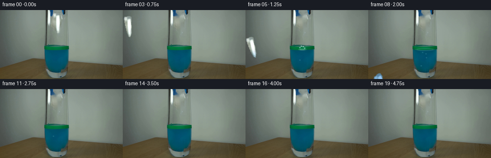
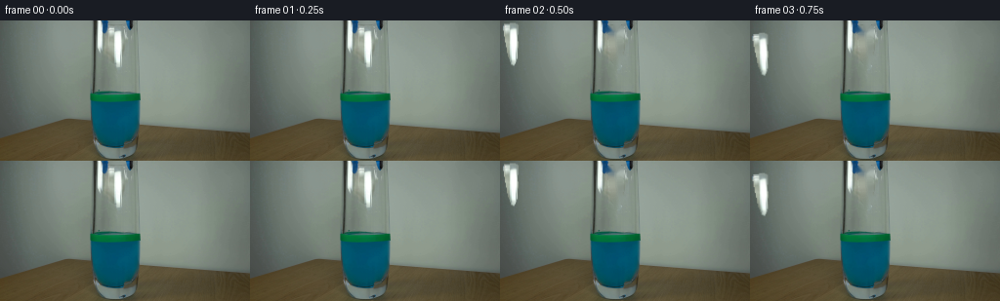
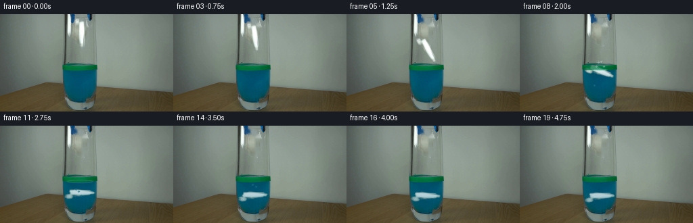
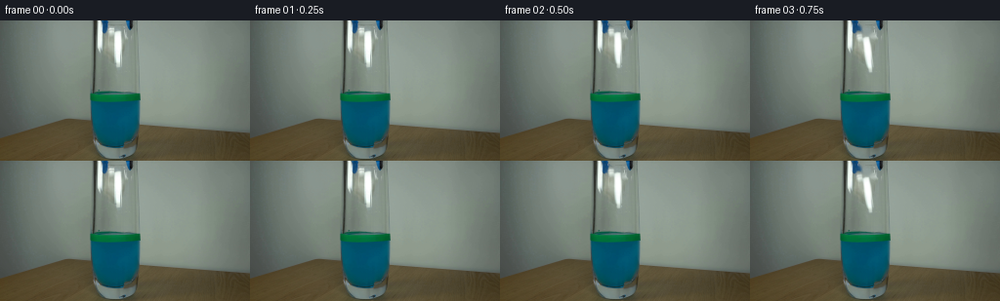
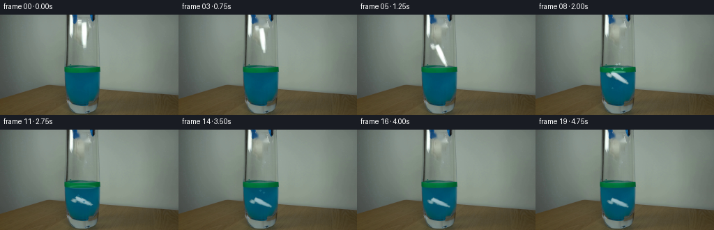
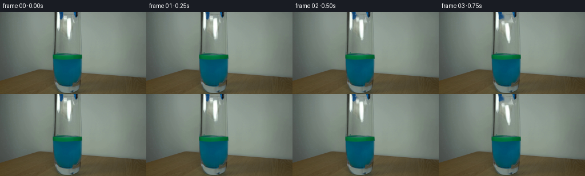

CODING AGENTS AS PIXEL WORLD MODELS
traex/DeepSeek-V4.1-Flash · 0138
点击播放 · 原生 RGB 像素
逐轮保存的候选
回放视频、检查图与代码变化。
每份候选均可单独播放。实际图片检查记录在下方工具轨迹中。
候选 01播放与检查图
点击播放 · 原生 RGB 像素


展开代码变化
--- 上一保存版本
+++ 本次保存版本
@@ -0,0 +1,281 @@
+from pathlib import Path
+
+import cv2
+import numpy as np
+from PIL import Image
+
+import artifact_io
+
+
+ROOT = Path(__file__).resolve().parent
+WIDTH, HEIGHT, FRAME_COUNT, FPS = 256, 144, 20, 4
+WATER_SURFACE = 82.0
+
+
+def make_paper_mask():
+ """Trace the visible crumpled paper held between the two grabber jaws."""
+ points = np.array(
+ [
+ (111, 6),
+ (122, 5),
+ (125, 7),
+ (125, 14),
+ (124, 20),
+ (125, 27),
+ (124, 34),
+ (124, 40),
+ (123, 44),
+ (121, 48),
+ (118, 47),
+ (117, 42),
+ (115, 38),
+ (114, 32),
+ (113, 27),
+ (112, 21),
+ (111, 15),
+ (110, 10),
+ ],
+ dtype=np.int32,
+ )
+ mask = np.zeros((HEIGHT, WIDTH), np.uint8)
+ cv2.fillPoly(mask, [points], 255)
+ return mask
+
+
+def extract_paper(frame, mask):
+ x0, y0, x1, y1 = 107, 3, 128, 51
+ crop = frame[y0:y1, x0:x1].copy()
+ hard_alpha = mask[y0:y1, x0:x1].astype(np.float32) / 255.0
+ alpha = cv2.GaussianBlur(hard_alpha, (3, 3), 0.55)
+ alpha = np.clip((alpha - 0.08) / 0.84, 0.0, 1.0)
+ alpha[hard_alpha > 0.99] = 1.0
+ return crop, alpha
+
+
+def paper_motion(frame_index):
+ """Return center offset, angle, and horizontal scale for each output frame."""
+ if frame_index <= 1:
+ return 0.0, 0.0, 0.0, 1.0
+ offsets = {
+ 2: (0.5, 0.0),
+ 3: (7.0, 2.0),
+ 4: (18.0, 6.0),
+ 5: (32.0, 12.0),
+ 6: (45.0, 20.0),
+ 7: (57.0, 28.0),
+ 8: (67.0, 35.0),
+ 9: (75.0, 42.0),
+ 10: (81.0, 49.0),
+ 11: (85.0, 55.0),
+ 12: (88.0, 60.0),
+ 13: (90.0, 64.0),
+ 14: (91.0, 67.0),
+ 15: (91.5, 70.0),
+ 16: (92.0, 72.0),
+ 17: (92.0, 73.0),
+ 18: (92.0, 73.0),
+ 19: (92.0, 73.0),
+ }
+ dy, angle = offsets[frame_index]
+ dx = 0.0
+ if frame_index >= 7:
+ dx = 0.9 * np.sin((frame_index - 7) * 0.7)
+ return dx, dy, angle, 1.0
+
+
+def warp_paper(frame, patch, alpha, dx, dy, angle, xscale):
+ center = np.array([117.5, 26.5], np.float32)
+ destination = center + np.array([dx, dy], np.float32)
+ matrix = cv2.getRotationMatrix2D(tuple(center), angle, 1.0)
+ matrix[:, 2] += destination - center
+ if xscale != 1.0:
+ squeeze = np.array(
+ [[xscale, 0.0, center[0] * (1.0 - xscale)], [0.0, 1.0, 0.0]],
+ np.float32,
+ )
+ matrix = np.vstack([matrix, [0.0, 0.0, 1.0]])
+ matrix = (np.vstack([squeeze, [0.0, 0.0, 1.0]]) @ matrix)[:2]
+
+ warped_rgb = cv2.warpAffine(
+ patch,
+ matrix,
+ (WIDTH, HEIGHT),
+ flags=cv2.INTER_LINEAR,
+ borderMode=cv2.BORDER_CONSTANT,
+ borderValue=(0, 0, 0),
+ )
+ warped_alpha = cv2.warpAffine(
+ alpha,
+ matrix,
+ (WIDTH, HEIGHT),
+ flags=cv2.INTER_LINEAR,
+ borderMode=cv2.BORDER_CONSTANT,
+ borderValue=0,
+ )
+ return warped_rgb, warped_alpha
+
+
+def refract_paper(rgb, alpha, frame_index):
+ """Add a slight row-wise water refraction below the liquid surface."""
+ out_rgb = rgb.copy()
+ out_alpha = alpha.copy()
+ phase = frame_index * 0.65
+ for y in range(int(WATER_SURFACE) + 1, HEIGHT):
+ depth = y - WATER_SURFACE
+ amp = min(1.2, 0.15 + depth / 35.0)
+ shift = int(round(amp * np.sin(0.30 * y + phase)))
+ if shift:
+ out_rgb[y] = np.roll(out_rgb[y], shift, axis=0)
+ out_alpha[y] = np.roll(out_alpha[y], shift, axis=0)
+ return out_rgb, out_alpha
+
+
+def tint_submerged_paper(rgb, frame_index):
+ """Absorb warm light and add a blue-green water cast with depth."""
+ result = rgb.astype(np.float32)
+ yy = np.arange(HEIGHT, dtype=np.float32)[:, None]
+ depth = np.clip((yy - WATER_SURFACE) / 28.0, 0.0, 1.0)
+ depth = depth * (0.88 + 0.04 * np.sin(frame_index * 0.6 + yy * 0.2))
+ depth = np.repeat(depth, WIDTH, axis=1)
+ absorption = depth * 0.48
+ result[..., 0] *= 1.0 - absorption * 0.92
+ result[..., 1] *= 1.0 - absorption * 0.58
+ result[..., 2] *= 1.0 - absorption * 0.24
+ result[..., 0] += depth * 4.0
+ result[..., 1] += depth * 14.0
+ result[..., 2] += depth * 25.0
+ # Slight blur below the surface mimics a few pixels of suspended sediment.
+ blurred = cv2.GaussianBlur(result, (0, 0), 0.38)
+ blend = np.repeat(np.clip((yy - WATER_SURFACE) / 8.0, 0.0, 1.0), WIDTH, axis=1)
+ blend = blend[..., None]
+ result = result * (1.0 - blend) + blurred * blend
+ return np.clip(result, 0, 255).astype(np.uint8)
+
+
+def composite_paper(canvas, patch, alpha, frame_index):
+ dx, dy, angle, xscale = paper_motion(frame_index)
+ rgb, a = warp_paper(canvas, patch, alpha, dx, dy, angle, xscale)
+ rgb, a = refract_paper(rgb, a, frame_index)
+ rgb = tint_submerged_paper(rgb, frame_index)
+ a = np.clip(a, 0.0, 1.0)[..., None]
+ out = canvas.astype(np.float32) * (1.0 - a) + rgb.astype(np.float32) * a
+ return np.clip(out, 0, 255).astype(np.uint8)
+
+
+def liquid_shimmer(canvas, frame_index):
+ if frame_index == 0:
+ return canvas
+ yy, xx = np.mgrid[0:HEIGHT, 0:WIDTH]
+ water = (yy >= 83) & (xx >= 93) & (xx <= 142)
+ wave = (
+ np.sin(xx * 0.22 + yy * 0.13 + frame_index * 0.42)
+ + 0.45 * np.sin(xx * 0.39 - yy * 0.09 - frame_index * 0.31)
+ )
+ tint = wave * 1.45
+ out = canvas.astype(np.float32)
+ for channel, scale in enumerate((0.35, 0.70, 1.0)):
+ out[..., channel] += water * tint * scale
+ return np.clip(out, 0, 255).astype(np.uint8)
+
+
+def draw_surface_effects(canvas, frame_index):
+ """Small impact rings, droplets, and rising bubbles after paper entry."""
+ if frame_index < 5:
+ return canvas
+ age = frame_index - 5
+ out = canvas.copy()
+
+ # Elliptical rings flatten toward the viewer at the liquid surface.
+ for ring in range(2):
+ radius = 5.0 + age * 4.2 + ring * 3.0
+ if radius > 30.0:
+ continue
+ strength = max(0.0, 1.0 - radius / 32.0)
+ color = (
+ int(115 + 85 * strength),
+ int(190 + 50 * strength),
+ int(185 + 45 * strength),
+ )
+ overlay = out.copy()
+ cv2.ellipse(
+ overlay,
+ (118, 82),
+ (int(radius), max(1, int(radius * 0.14))),
+ 0,
+ 0,
+ 360,
+ color,
+ 1,
+ cv2.LINE_AA,
+ )
+ out = cv2.addWeighted(overlay, 0.30 * strength, out, 1.0 - 0.30 * strength, 0)
+
+ # A compact splash is visible for the first two post-impact frames.
+ if age <= 2:
+ droplets = [
+ (113, 78 - 2 * age),
+ (116, 75 - 3 * age),
+ (120, 76 - 2 * age),
+ (123, 79 - age),
+ ]
+ overlay = out.copy()
+ for x, y in droplets:
+ cv2.circle(overlay, (x, y), 1, (190, 236, 228), -1, cv2.LINE_AA)
+ alpha = 0.62 if age == 0 else 0.36
+ out = cv2.addWeighted(overlay, alpha, out, 1.0 - alpha, 0)
+
+ # Sparse bubbles rise from the settling paper.
+ bubbles = [
+ (113, 104, 0.0, 5.5),
+ (122, 111, 1.1, 6.2),
+ (119, 96, 2.0, 4.8),
+ (110, 117, 2.8, 5.8),
+ ]
+ for x0, y0, delay, speed in bubbles:
+ bubble_age = age - delay
+ if bubble_age < 0:
+ continue
+ y = y0 - bubble_age * speed
+ if y < 84:
+ continue
+ x = int(round(x0 + 1.5 * np.sin(bubble_age * 1.1 + x0)))
+ y = int(round(y))
+ overlay = out.copy()
+ cv2.circle(overlay, (x, y), 1, (31, 115, 135), -1, cv2.LINE_AA)
+ cv2.circle(overlay, (x - 1, y - 1), 0, (151, 212, 213), -1, cv2.LINE_AA)
+ out = cv2.addWeighted(overlay, 0.72, out, 0.28, 0)
+
+ return out
+
+
+def make_frames():
+ first = np.array(Image.open(ROOT / "first_frame.png").convert("RGB"), dtype=np.uint8)
+ assert first.shape == (HEIGHT, WIDTH, 3)
+
+ paper_mask = make_paper_mask()
+ removal_mask = cv2.dilate(paper_mask, np.ones((3, 3), np.uint8), iterations=1)
+ background = cv2.inpaint(first, removal_mask, 4, cv2.INPAINT_TELEA)
+ patch, alpha = extract_paper(first, paper_mask)
+
+ frames = []
+ for index in range(FRAME_COUNT):
+ if index == 0:
+ frames.append(first.copy())
+ continue
+ if index == 1:
+ frames.append(first.copy())
+ continue
+ canvas = liquid_shimmer(background, index)
+ canvas = composite_paper(canvas, patch, alpha, index)
+ canvas = draw_surface_effects(canvas, index)
+ frames.append(canvas)
+ return np.stack(frames, axis=0)
+
+
+def main():
+ frames = make_frames()
+ artifact_io.save(frames, ROOT)
+
+
+if __name__ == "__main__":
+ main()
候选 02播放与检查图
点击播放 · 原生 RGB 像素


展开代码变化
--- 上一保存版本
+++ 本次保存版本
@@ -9,31 +9,38 @@
ROOT = Path(__file__).resolve().parent
WIDTH, HEIGHT, FRAME_COUNT, FPS = 256, 144, 20, 4
+
+# The green band marks the liquid level. The blue liquid begins below it.
WATER_SURFACE = 82.0
-
-
-def make_paper_mask():
- """Trace the visible crumpled paper held between the two grabber jaws."""
+IMPACT_FRAME = 6
+
+PAPER_CROP = (107, 3, 128, 51)
+PAPER_CENTER = np.array([117.5, 26.5], dtype=np.float32)
+
+
+def paper_silhouette():
+ """Broad silhouette used only to remove the held paper from the plate."""
points = np.array(
[
- (111, 6),
- (122, 5),
- (125, 7),
- (125, 14),
- (124, 20),
- (125, 27),
- (124, 34),
- (124, 40),
- (123, 44),
- (121, 48),
- (118, 47),
- (117, 42),
- (115, 38),
- (114, 32),
- (113, 27),
- (112, 21),
- (111, 15),
- (110, 10),
+ (112, 4),
+ (116, 5),
+ (117, 10),
+ (124, 11),
+ (126, 15),
+ (125, 24),
+ (125, 30),
+ (124, 36),
+ (124, 41),
+ (122, 46),
+ (122, 49),
+ (119, 48),
+ (118, 44),
+ (117, 38),
+ (116, 31),
+ (115, 24),
+ (114, 17),
+ (111, 14),
+ (110, 9),
],
dtype=np.int32,
)
@@ -42,232 +49,311 @@
return mask
-def extract_paper(frame, mask):
- x0, y0, x1, y1 = 107, 3, 128, 51
- crop = frame[y0:y1, x0:x1].copy()
- hard_alpha = mask[y0:y1, x0:x1].astype(np.float32) / 255.0
- alpha = cv2.GaussianBlur(hard_alpha, (3, 3), 0.55)
- alpha = np.clip((alpha - 0.08) / 0.84, 0.0, 1.0)
- alpha[hard_alpha > 0.99] = 1.0
- return crop, alpha
+def extract_paper(frame):
+ """Recover a soft paper matte from the white, low-saturation source pixels."""
+ x0, y0, x1, y1 = PAPER_CROP
+ patch = frame[y0:y1, x0:x1].copy()
+
+ silhouette = paper_silhouette()[y0:y1, x0:x1].astype(np.float32) / 255.0
+ silhouette = cv2.GaussianBlur(silhouette, (3, 3), 0.45)
+
+ rgb = patch.astype(np.float32)
+ luminance = rgb.mean(axis=2)
+ saturation = rgb.max(axis=2) - rgb.min(axis=2)
+ row_background = np.median(
+ frame[:, 128:138].astype(np.float32).mean(axis=2), axis=1
+ )
+ local_score = luminance - row_background[y0:y1, None]
+
+ signal = np.clip((local_score - 4.0) / 38.0, 0.0, 1.0)
+ bright = np.clip((luminance - 150.0) / 80.0, 0.0, 1.0)
+ neutral = np.clip((58.0 - saturation) / 32.0, 0.0, 1.0)
+ alpha = np.maximum(signal, bright * 0.72) * neutral * silhouette
+
+ # Preserve the bright core cleanly while keeping the crumpled edges soft.
+ alpha[luminance > 205.0] = np.maximum(alpha[luminance > 205.0], 0.92)
+ alpha = cv2.GaussianBlur(alpha, (3, 3), 0.38)
+ alpha = np.clip((alpha - 0.035) / 0.92, 0.0, 1.0)
+ return patch, alpha.astype(np.float32)
+
+
+def clean_background(first):
+ """Remove the held paper while retaining the glass and grabber geometry."""
+ removal = cv2.dilate(
+ paper_silhouette(), np.ones((3, 3), np.uint8), iterations=1
+ )
+ background = cv2.inpaint(first, removal, 3, cv2.INPAINT_TELEA)
+
+ # A faint vertical glass gradient prevents the inpainted strip from reading flat.
+ yy = np.arange(HEIGHT, dtype=np.float32)[:, None, None]
+ xx = np.arange(WIDTH, dtype=np.float32)[None, :, None]
+ region = (removal > 0)[..., None].astype(np.float32)
+ gradient = 2.2 * np.cos((yy - 22.0) / 19.0) + 0.7 * np.sin(xx * 0.33)
+ background = np.clip(
+ background.astype(np.float32) + region * gradient, 0, 255
+ ).astype(np.uint8)
+ return background
def paper_motion(frame_index):
- """Return center offset, angle, and horizontal scale for each output frame."""
- if frame_index <= 1:
- return 0.0, 0.0, 0.0, 1.0
- offsets = {
- 2: (0.5, 0.0),
- 3: (7.0, 2.0),
- 4: (18.0, 6.0),
- 5: (32.0, 12.0),
- 6: (45.0, 20.0),
- 7: (57.0, 28.0),
- 8: (67.0, 35.0),
- 9: (75.0, 42.0),
- 10: (81.0, 49.0),
- 11: (85.0, 55.0),
- 12: (88.0, 60.0),
- 13: (90.0, 64.0),
- 14: (91.0, 67.0),
- 15: (91.5, 70.0),
- 16: (92.0, 72.0),
- 17: (92.0, 73.0),
- 18: (92.0, 73.0),
- 19: (92.0, 73.0),
+ """Rigid-body release, entry, and slow submerged settling."""
+ motion = {
+ 0: (0.0, 0.0, 0.0, 1.00),
+ 1: (0.0, 0.0, 0.0, 1.00),
+ 2: (0.0, 1.0, 1.0, 1.00),
+ 3: (0.0, 6.0, 7.0, 1.00),
+ 4: (0.0, 15.0, 16.0, 1.00),
+ 5: (0.0, 26.0, 27.0, 1.00),
+ 6: (0.0, 39.0, 40.0, 0.99),
+ 7: (0.0, 51.0, 54.0, 0.98),
+ 8: (0.0, 60.0, 66.0, 0.97),
+ 9: (0.0, 67.0, 76.0, 0.97),
+ 10: (0.0, 72.0, 83.0, 0.96),
+ 11: (0.0, 75.0, 88.0, 0.96),
+ 12: (0.0, 77.0, 90.0, 0.96),
+ 13: (0.5, 78.0, 91.0, 0.96),
+ 14: (0.8, 78.5, 89.0, 0.96),
+ 15: (0.2, 79.0, 87.0, 0.96),
+ 16: (-0.5, 79.3, 86.0, 0.96),
+ 17: (-0.8, 79.5, 87.0, 0.96),
+ 18: (-0.2, 79.6, 89.0, 0.96),
+ 19: (0.5, 79.7, 90.0, 0.96),
}
- dy, angle = offsets[frame_index]
- dx = 0.0
- if frame_index >= 7:
- dx = 0.9 * np.sin((frame_index - 7) * 0.7)
- return dx, dy, angle, 1.0
-
-
-def warp_paper(frame, patch, alpha, dx, dy, angle, xscale):
- center = np.array([117.5, 26.5], np.float32)
- destination = center + np.array([dx, dy], np.float32)
- matrix = cv2.getRotationMatrix2D(tuple(center), angle, 1.0)
- matrix[:, 2] += destination - center
- if xscale != 1.0:
- squeeze = np.array(
- [[xscale, 0.0, center[0] * (1.0 - xscale)], [0.0, 1.0, 0.0]],
- np.float32,
- )
- matrix = np.vstack([matrix, [0.0, 0.0, 1.0]])
- matrix = (np.vstack([squeeze, [0.0, 0.0, 1.0]]) @ matrix)[:2]
-
- warped_rgb = cv2.warpAffine(
+ return motion[frame_index]
+
+
+def affine_for(frame_index):
+ dx, dy, angle, scale = paper_motion(frame_index)
+ matrix = cv2.getRotationMatrix2D(tuple(PAPER_CENTER), angle, scale)
+ destination = PAPER_CENTER + np.array([dx, dy], np.float32)
+ matrix[:, 2] += destination - PAPER_CENTER
+ return matrix
+
+
+def warp_paper(patch, alpha, frame_index):
+ """Warp a full-frame sprite in supersampled coordinates."""
+ x0, y0, x1, y1 = PAPER_CROP
+ factor = 2
+ layer = np.zeros((HEIGHT * factor, WIDTH * factor, 3), np.uint8)
+ layer_alpha = np.zeros((HEIGHT * factor, WIDTH * factor), np.float32)
+
+ patch_up = cv2.resize(
patch,
+ ((x1 - x0) * factor, (y1 - y0) * factor),
+ interpolation=cv2.INTER_LINEAR,
+ )
+ alpha_up = cv2.resize(
+ alpha,
+ ((x1 - x0) * factor, (y1 - y0) * factor),
+ interpolation=cv2.INTER_LINEAR,
+ )
+ layer[y0 * factor : y1 * factor, x0 * factor : x1 * factor] = patch_up
+ layer_alpha[
+ y0 * factor : y1 * factor, x0 * factor : x1 * factor
+ ] = alpha_up
+
+ matrix = affine_for(frame_index).copy()
+ matrix[:, 2] *= factor
+ rgb_up = cv2.warpAffine(
+ layer,
matrix,
- (WIDTH, HEIGHT),
+ (WIDTH * factor, HEIGHT * factor),
flags=cv2.INTER_LINEAR,
borderMode=cv2.BORDER_CONSTANT,
borderValue=(0, 0, 0),
)
- warped_alpha = cv2.warpAffine(
- alpha,
+ alpha_warped = cv2.warpAffine(
+ layer_alpha,
matrix,
- (WIDTH, HEIGHT),
+ (WIDTH * factor, HEIGHT * factor),
flags=cv2.INTER_LINEAR,
borderMode=cv2.BORDER_CONSTANT,
borderValue=0,
)
- return warped_rgb, warped_alpha
-
-
-def refract_paper(rgb, alpha, frame_index):
- """Add a slight row-wise water refraction below the liquid surface."""
- out_rgb = rgb.copy()
- out_alpha = alpha.copy()
- phase = frame_index * 0.65
+ rgb = cv2.resize(rgb_up, (WIDTH, HEIGHT), interpolation=cv2.INTER_AREA)
+ alpha_warped = cv2.resize(
+ alpha_warped, (WIDTH, HEIGHT), interpolation=cv2.INTER_AREA
+ )
+ return rgb, np.clip(alpha_warped, 0.0, 1.0)
+
+
+def refract_and_tint(rgb, alpha, frame_index):
+ """Displace and color the submerged part of the paper through the liquid."""
+ rgb_out = rgb.astype(np.float32)
+ alpha_out = alpha.copy()
+ yy = np.arange(HEIGHT, dtype=np.float32)[:, None]
+
+ # The refracted edge shifts by at most one pixel, keeping the small sprite crisp.
for y in range(int(WATER_SURFACE) + 1, HEIGHT):
- depth = y - WATER_SURFACE
- amp = min(1.2, 0.15 + depth / 35.0)
- shift = int(round(amp * np.sin(0.30 * y + phase)))
- if shift:
- out_rgb[y] = np.roll(out_rgb[y], shift, axis=0)
- out_alpha[y] = np.roll(out_alpha[y], shift, axis=0)
- return out_rgb, out_alpha
-
-
-def tint_submerged_paper(rgb, frame_index):
- """Absorb warm light and add a blue-green water cast with depth."""
- result = rgb.astype(np.float32)
- yy = np.arange(HEIGHT, dtype=np.float32)[:, None]
- depth = np.clip((yy - WATER_SURFACE) / 28.0, 0.0, 1.0)
- depth = depth * (0.88 + 0.04 * np.sin(frame_index * 0.6 + yy * 0.2))
+ depth = np.clip((y - WATER_SURFACE) / 34.0, 0.0, 1.0)
+ shift = int(
+ round((0.22 + 0.62 * depth) * np.sin(y * 0.27 + frame_index * 0.58))
+ )
+ if shift > 0:
+ rgb_out[y, shift:] = rgb_out[y, :-shift]
+ alpha_out[y, shift:] = alpha_out[y, :-shift]
+ rgb_out[y, :shift] = 0
+ alpha_out[y, :shift] = 0
+ elif shift < 0:
+ shift = -shift
+ rgb_out[y, :-shift] = rgb_out[y, shift:]
+ alpha_out[y, :-shift] = alpha_out[y, shift:]
+ rgb_out[y, -shift:] = 0
+ alpha_out[y, -shift:] = 0
+
+ depth = np.clip((yy - WATER_SURFACE) / 38.0, 0.0, 1.0)
depth = np.repeat(depth, WIDTH, axis=1)
- absorption = depth * 0.48
- result[..., 0] *= 1.0 - absorption * 0.92
- result[..., 1] *= 1.0 - absorption * 0.58
- result[..., 2] *= 1.0 - absorption * 0.24
- result[..., 0] += depth * 4.0
- result[..., 1] += depth * 14.0
- result[..., 2] += depth * 25.0
- # Slight blur below the surface mimics a few pixels of suspended sediment.
- blurred = cv2.GaussianBlur(result, (0, 0), 0.38)
- blend = np.repeat(np.clip((yy - WATER_SURFACE) / 8.0, 0.0, 1.0), WIDTH, axis=1)
- blend = blend[..., None]
- result = result * (1.0 - blend) + blurred * blend
+ absorption = 0.12 + 0.33 * depth
+ water_color = np.array([5.0, 96.0, 124.0], dtype=np.float32)
+ rgb_out = (
+ rgb_out * (1.0 - absorption[..., None])
+ + water_color[None, None, :] * absorption[..., None]
+ )
+
+ soft = cv2.GaussianBlur(rgb_out, (0, 0), 0.42)
+ blend = np.repeat(
+ np.clip((yy - WATER_SURFACE) / 10.0, 0.0, 1.0), WIDTH, axis=1
+ )[..., None]
+ rgb_out = rgb_out * (1.0 - blend) + soft * blend
+ return np.clip(rgb_out, 0, 255), np.clip(alpha_out, 0.0, 1.0)
+
+
+def composite_paper(canvas, patch, alpha, frame_index):
+ rgb, matte = warp_paper(patch, alpha, frame_index)
+ if frame_index >= IMPACT_FRAME:
+ rgb, matte = refract_and_tint(rgb, matte, frame_index)
+ matte = matte[..., None]
+ result = canvas.astype(np.float32) * (1.0 - matte) + rgb * matte
return np.clip(result, 0, 255).astype(np.uint8)
-def composite_paper(canvas, patch, alpha, frame_index):
- dx, dy, angle, xscale = paper_motion(frame_index)
- rgb, a = warp_paper(canvas, patch, alpha, dx, dy, angle, xscale)
- rgb, a = refract_paper(rgb, a, frame_index)
- rgb = tint_submerged_paper(rgb, frame_index)
- a = np.clip(a, 0.0, 1.0)[..., None]
- out = canvas.astype(np.float32) * (1.0 - a) + rgb.astype(np.float32) * a
- return np.clip(out, 0, 255).astype(np.uint8)
-
-
-def liquid_shimmer(canvas, frame_index):
- if frame_index == 0:
+def water_shimmer(canvas, frame_index):
+ """Low-amplitude caustic motion confined to the blue liquid."""
+ if frame_index < 2:
return canvas
yy, xx = np.mgrid[0:HEIGHT, 0:WIDTH]
- water = (yy >= 83) & (xx >= 93) & (xx <= 142)
+ liquid = (
+ (yy >= 83)
+ & (yy <= 142)
+ & (xx >= 94)
+ & (xx <= 141)
+ )
wave = (
- np.sin(xx * 0.22 + yy * 0.13 + frame_index * 0.42)
- + 0.45 * np.sin(xx * 0.39 - yy * 0.09 - frame_index * 0.31)
- )
- tint = wave * 1.45
+ np.sin(xx * 0.20 + yy * 0.12 + frame_index * 0.40)
+ + 0.42 * np.sin(xx * 0.37 - yy * 0.08 - frame_index * 0.29)
+ )
+ tint = wave * 1.15
out = canvas.astype(np.float32)
- for channel, scale in enumerate((0.35, 0.70, 1.0)):
- out[..., channel] += water * tint * scale
+ for channel, weight in enumerate((0.30, 0.68, 1.0)):
+ out[..., channel] += liquid * tint * weight
return np.clip(out, 0, 255).astype(np.uint8)
-def draw_surface_effects(canvas, frame_index):
- """Small impact rings, droplets, and rising bubbles after paper entry."""
- if frame_index < 5:
+def reapply_level_band(canvas, first, frame_index):
+ """Keep the green level marking visually in front of the submerged paper."""
+ if frame_index < IMPACT_FRAME:
return canvas
- age = frame_index - 5
+ band = first[72:83, 93:143].astype(np.float32)
+ out = canvas.astype(np.float32)
+ region = out[72:83, 93:143]
+ out[72:83, 93:143] = region * 0.28 + band * 0.72
+ return np.clip(out, 0, 255).astype(np.uint8)
+
+
+def surface_effects(canvas, frame_index):
+ """Splash, expanding surface rings, and a few rising bubbles."""
+ if frame_index < IMPACT_FRAME:
+ return canvas
+ age = frame_index - IMPACT_FRAME
out = canvas.copy()
- # Elliptical rings flatten toward the viewer at the liquid surface.
+ if age == 0:
+ impact = out.copy()
+ cv2.ellipse(
+ impact, (118, 83), (3, 1), 0, 0, 360, (8, 59, 70), -1, cv2.LINE_AA
+ )
+ out = cv2.addWeighted(impact, 0.48, out, 0.52, 0)
+
+ if age <= 2:
+ splash = out.copy()
+ droplets = [
+ (113, 79 - age),
+ (116, 75 - 2 * age),
+ (120, 74 - 2 * age),
+ (124, 79 - age),
+ ]
+ for x, y in droplets:
+ cv2.circle(splash, (x, y), 1, (188, 235, 226), -1, cv2.LINE_AA)
+ strength = 0.62 if age == 0 else 0.38
+ out = cv2.addWeighted(splash, strength, out, 1.0 - strength, 0)
+
for ring in range(2):
- radius = 5.0 + age * 4.2 + ring * 3.0
- if radius > 30.0:
+ radius = 3.0 + age * 3.0 + ring * 2.5
+ if radius > 24.0:
continue
- strength = max(0.0, 1.0 - radius / 32.0)
- color = (
- int(115 + 85 * strength),
- int(190 + 50 * strength),
- int(185 + 45 * strength),
- )
- overlay = out.copy()
+ strength = max(0.0, 1.0 - radius / 25.0) * 0.42
+ ring_layer = out.copy()
cv2.ellipse(
- overlay,
+ ring_layer,
(118, 82),
- (int(radius), max(1, int(radius * 0.14))),
+ (max(1, int(radius)), max(1, int(radius * 0.13))),
0,
0,
360,
- color,
+ (150, 220, 207),
1,
cv2.LINE_AA,
)
- out = cv2.addWeighted(overlay, 0.30 * strength, out, 1.0 - 0.30 * strength, 0)
-
- # A compact splash is visible for the first two post-impact frames.
- if age <= 2:
- droplets = [
- (113, 78 - 2 * age),
- (116, 75 - 3 * age),
- (120, 76 - 2 * age),
- (123, 79 - age),
+ out = cv2.addWeighted(
+ ring_layer, strength, out, 1.0 - strength, 0
+ )
+
+ if frame_index >= 8:
+ bubble_age = frame_index - 8
+ bubbles = [
+ (111, 105, 0.0, 3.6),
+ (121, 111, 1.0, 4.2),
+ (116, 99, 2.4, 3.2),
]
- overlay = out.copy()
- for x, y in droplets:
- cv2.circle(overlay, (x, y), 1, (190, 236, 228), -1, cv2.LINE_AA)
- alpha = 0.62 if age == 0 else 0.36
- out = cv2.addWeighted(overlay, alpha, out, 1.0 - alpha, 0)
-
- # Sparse bubbles rise from the settling paper.
- bubbles = [
- (113, 104, 0.0, 5.5),
- (122, 111, 1.1, 6.2),
- (119, 96, 2.0, 4.8),
- (110, 117, 2.8, 5.8),
- ]
- for x0, y0, delay, speed in bubbles:
- bubble_age = age - delay
- if bubble_age < 0:
- continue
- y = y0 - bubble_age * speed
- if y < 84:
- continue
- x = int(round(x0 + 1.5 * np.sin(bubble_age * 1.1 + x0)))
- y = int(round(y))
- overlay = out.copy()
- cv2.circle(overlay, (x, y), 1, (31, 115, 135), -1, cv2.LINE_AA)
- cv2.circle(overlay, (x - 1, y - 1), 0, (151, 212, 213), -1, cv2.LINE_AA)
- out = cv2.addWeighted(overlay, 0.72, out, 0.28, 0)
-
+ for x0, y0, delay, speed in bubbles:
+ local_age = bubble_age - delay
+ if local_age < 0:
+ continue
+ x = int(round(x0 + 1.2 * np.sin(local_age * 1.1 + x0)))
+ y = int(round(y0 - local_age * speed))
+ if y <= 84:
+ continue
+ bubble_layer = out.copy()
+ cv2.circle(
+ bubble_layer, (x, y), 1, (25, 111, 132), -1, cv2.LINE_AA
+ )
+ cv2.circle(
+ bubble_layer, (x - 1, y - 1), 0, (133, 197, 199), -1, cv2.LINE_AA
+ )
+ out = cv2.addWeighted(
+ bubble_layer, 0.66, out, 0.34, 0
+ )
return out
def make_frames():
- first = np.array(Image.open(ROOT / "first_frame.png").convert("RGB"), dtype=np.uint8)
+ first = np.array(
+ Image.open(ROOT / "first_frame.png").convert("RGB"), dtype=np.uint8
+ )
assert first.shape == (HEIGHT, WIDTH, 3)
- paper_mask = make_paper_mask()
- removal_mask = cv2.dilate(paper_mask, np.ones((3, 3), np.uint8), iterations=1)
- background = cv2.inpaint(first, removal_mask, 4, cv2.INPAINT_TELEA)
- patch, alpha = extract_paper(first, paper_mask)
+ patch, alpha = extract_paper(first)
+ background = clean_background(first)
frames = []
for index in range(FRAME_COUNT):
- if index == 0:
+ if index <= 1:
frames.append(first.copy())
continue
- if index == 1:
- frames.append(first.copy())
- continue
- canvas = liquid_shimmer(background, index)
+ canvas = water_shimmer(background, index)
canvas = composite_paper(canvas, patch, alpha, index)
- canvas = draw_surface_effects(canvas, index)
+ canvas = reapply_level_band(canvas, first, index)
+ canvas = surface_effects(canvas, index)
frames.append(canvas)
return np.stack(frames, axis=0)
候选 03播放与检查图
点击播放 · 原生 RGB 像素


展开代码变化
--- 上一保存版本
+++ 本次保存版本
@@ -100,24 +100,24 @@
motion = {
0: (0.0, 0.0, 0.0, 1.00),
1: (0.0, 0.0, 0.0, 1.00),
- 2: (0.0, 1.0, 1.0, 1.00),
- 3: (0.0, 6.0, 7.0, 1.00),
- 4: (0.0, 15.0, 16.0, 1.00),
- 5: (0.0, 26.0, 27.0, 1.00),
- 6: (0.0, 39.0, 40.0, 0.99),
- 7: (0.0, 51.0, 54.0, 0.98),
- 8: (0.0, 60.0, 66.0, 0.97),
- 9: (0.0, 67.0, 76.0, 0.97),
- 10: (0.0, 72.0, 83.0, 0.96),
- 11: (0.0, 75.0, 88.0, 0.96),
- 12: (0.0, 77.0, 90.0, 0.96),
- 13: (0.5, 78.0, 91.0, 0.96),
- 14: (0.8, 78.5, 89.0, 0.96),
- 15: (0.2, 79.0, 87.0, 0.96),
- 16: (-0.5, 79.3, 86.0, 0.96),
- 17: (-0.8, 79.5, 87.0, 0.96),
- 18: (-0.2, 79.6, 89.0, 0.96),
- 19: (0.5, 79.7, 90.0, 0.96),
+ 2: (0.0, 2.0, 1.0, 0.99),
+ 3: (0.0, 8.0, 6.0, 0.98),
+ 4: (0.0, 18.0, 14.0, 0.96),
+ 5: (0.0, 31.0, 24.0, 0.92),
+ 6: (0.0, 44.0, 35.0, 0.87),
+ 7: (0.0, 56.0, 46.0, 0.82),
+ 8: (0.0, 65.0, 55.0, 0.78),
+ 9: (0.0, 71.0, 61.0, 0.75),
+ 10: (0.0, 75.0, 64.0, 0.73),
+ 11: (0.0, 77.5, 66.0, 0.72),
+ 12: (0.0, 79.0, 66.0, 0.72),
+ 13: (0.5, 79.2, 65.0, 0.72),
+ 14: (0.8, 79.4, 64.0, 0.72),
+ 15: (0.2, 79.5, 64.5, 0.72),
+ 16: (-0.5, 79.6, 65.0, 0.72),
+ 17: (-0.8, 79.7, 65.5, 0.72),
+ 18: (-0.2, 79.8, 66.0, 0.72),
+ 19: (0.5, 79.9, 65.5, 0.72),
}
return motion[frame_index]
@@ -203,8 +203,8 @@
depth = np.clip((yy - WATER_SURFACE) / 38.0, 0.0, 1.0)
depth = np.repeat(depth, WIDTH, axis=1)
- absorption = 0.12 + 0.33 * depth
- water_color = np.array([5.0, 96.0, 124.0], dtype=np.float32)
+ absorption = 0.20 + 0.40 * depth
+ water_color = np.array([3.0, 86.0, 112.0], dtype=np.float32)
rgb_out = (
rgb_out * (1.0 - absorption[..., None])
+ water_color[None, None, :] * absorption[..., None]
可观测工具轨迹
实际执行的命令与返回图片。
命令 1exit 0
/bin/bash -c "pwd && rg --files -g 'prompt.txt' -g 'GENERATION_RULES.md' -g 'first_frame.png' -g '"'!*.mp4'"'"
命令 2exit 0
/bin/bash -c 'git status --short'
命令 3exit 0
/bin/bash -c "find . -maxdepth 2 -type f -printf '%p %s bytes\\n' | sort"
命令 4exit 0
/bin/bash -c 'cat prompt.txt'
命令 5exit 0
/bin/bash -c 'cat GENERATION_RULES.md'
命令 6exit 0
/bin/bash -c "sed -n '1,240p' artifact_io.py"
命令 7exit 0
/bin/bash -c "sed -n '1,240p' player_template.html"
命令 8exit 0
/bin/bash -c "python - <<'PY'
from PIL import Image
import numpy as np
im=np.array(Image.open('first_frame.png').convert('RGB'))
print('shape',im.shape,'dtype',im.dtype)
print('min/max',im.min(axis=(0,1)),im.max(axis=(0,1)))
print('mean/std',im.mean(axis=(0,1)),im.std(axis=(0,1)))
# common colors
u,c=np.unique(im.reshape(-1,3),axis=0,return_counts=True)
for idx in np.argsort(c)[-30:][::-1]: print(tuple(u[idx]),int(c[idx]))
PY"命令 9exit 0
/bin/bash -c "python - <<'PY'
from PIL import Image
import numpy as np
im=np.array(Image.open('first_frame.png').convert('RGB'))
# block avg 4x4 -> 64x36
h,w=im.shape[:2]
b=im.reshape(36,4,64,4,3).mean((1,3))
y=(0.2126*b[:,:,0]+0.7152*b[:,:,1]+0.0722*b[:,:,2])
chars=' .:-=+*#%@'
for row in y:
print(''.join(chars[min(9,int(v/256*10))] for v in row))
print('\\nCOLOR CATEGORIES (B blue, G green, Y brown/yellow, W bright neutral, K dark, R red, . mid neutral)')
r,g,bl=b[:,:,0],b[:,:,1],b[:,:,2]
mx=b.max(2); mn=b.min(2); sat=(mx-mn)
for j in range(36):
s=''
for i in range(64):
R,G,B=r[j,i],g[j,i],bl[j,i]; mxv=max(R,G,B); mnv=min(R,G,B); satv=mxv-mnv; lum=(R+G+B)/3
if lum<45: c='K'
elif lum>205 and satv<35: c='W'
elif satv<18: c='.'
elif B>R*1.20 and B>G*1.10: c='B'
elif G>R*1.18 and G>B*1.05: c='G'
elif R>G*1.16 and G>B*1.08: c='Y'
elif R>G*1.15 and R>B*1.15: c='R'
elif lum<95: c='k'
else: c='o'
s+=c
print(s)
PY"命令 10exit 0
/bin/bash -c "python - <<'PY'
from PIL import Image
import numpy as np
im=np.array(Image.open('first_frame.png').convert('RGB')).astype(int)
R,G,B=im.transpose(2,0,1)
# colors blue/green/dark/yellow-ish mask extents/counts
masks={
'blue':(B>R*1.35)&(B>G*1.12)&(B>45),
'green':(G>R*1.15)&(G>B*1.05)&(G>55),
'dark':(R+G+B<150),
'bright':(R+G+B>650),
'reddish':(R>G*1.25)&(R>B*1.3)&(R>60),
}
for name,m in masks.items():
ys,xs=np.where(m)
print(name,len(xs),'x',xs.min() if len(xs) else None,xs.max() if len(xs) else None,'y',ys.min() if len(ys) else None,ys.max() if len(ys) else None,'meanRGB',im[m].mean(0) if len(xs) else None)
# row/col count peaks
if len(xs):
cc=np.bincount(xs,minlength=256); rr=np.bincount(ys,minlength=144)
print(' cols',sorted(enumerate(cc),key=lambda z:z[1],reverse=True)[:8])
print(' rows',sorted(enumerate(rr),key=lambda z:z[1],reverse=True)[:8])
PY"命令 11exit 0
/bin/bash -c "python - <<'PY'
from PIL import Image
import numpy as np
im=np.array(Image.open('first_frame.png').convert('RGB')).astype(int)
# crop x=84..151 y=0..94, print every pixel char. columns labels
x0,x1,y0,y1=84,152,0,95
a=im[y0:y1,x0:x1]
R,G,B=a.transpose(2,0,1)
mx=a.max(2); mn=a.min(2); lum=a.mean(2); sat=mx-mn
ch=np.full(lum.shape,' ',dtype='<U1')
ch[(sat<16)&(lum<65)]='k'
ch[(sat<16)&(lum>=65)&(lum<110)]='d'
ch[(sat<16)&(lum>=110)&(lum<155)]='m'
ch[(sat<16)&(lum>=155)&(lum<205)]='l'
ch[(sat<16)&(lum>=205)]='W'
ch[(B>R*1.2)&(B>G*1.04)&(B>45)]='B'
ch[(G>R*1.12)&(G>B*1.02)&(G>55)]='G'
ch[(R>G*1.15)&(G>B*1.02)&(R>70)]='Y'
ch[(R>G*1.18)&(R>B*1.18)&(R>70)]='R'
# print every 2 cols and every row
print(' '+''.join(str((x//10)%10) for x in range(x0,x1,2)))
print(' '+''.join(str(x%10) for x in range(x0,x1,2)))
for y in range(y0,y1):
print(f'{y:3d} '+''.join(ch[y,x-x0] for x in range(x0,x1,2)))
PY"命令 12exit 0
/bin/bash -c "python - <<'PY'
from PIL import Image
import numpy as np
im=np.array(Image.open('first_frame.png').convert('RGB')).astype(int)
# luminance ascii at every pixel, crop 88:148 0:90
x0,x1,y0,y1=88,148,0,92
a=im[y0:y1,x0:x1]
lum=a.mean(2)
chars=' .,:;irsXA253hMHGS#9B&@'
# use 0-255 quantization 32 levels
for y in range(y0,y1):
print(f'{y:3d} '+''.join(chars[min(len(chars)-1,int(lum[y,x-x0]/256*len(chars)))] for x in range(x0,x1)))
PY"命令 13exit 0
/bin/bash -c "python - <<'PY'
try:
import cv2; print('cv2',cv2.__version__)
except Exception as e: print('no cv2',e)
try:
import scipy; print('scipy',scipy.__version__)
except Exception as e: print('no scipy',e)
PY"命令 14exit 0
/bin/bash -c "python - <<'PY'
from PIL import Image
import numpy as np
im=np.array(Image.open('first_frame.png').convert('RGB')).astype(int)
# print pixel rgb sample grids around object
for y in range(6,60,2):
print(f'{y:2d}', ' '.join('%02x%02x%02x'%tuple(im[y,x]) for x in range(99,126,2)))
PY"命令 15exit 0
/bin/bash -c "python - <<'PY'
from PIL import Image
import numpy as np, cv2
im=np.array(Image.open('first_frame.png').convert('RGB'))
g=cv2.cvtColor(im,cv2.COLOR_RGB2GRAY)
# simple edges crop enlarge ascii at 2x2
e=cv2.Canny(g,40,100)
for y in range(0,80,2):
print(f'{y:2d} '+''.join('#' if e[y:y+2,x:x+2].sum()>=2 else ('+' if e[y:y+2,x:x+2].sum() else ' ') for x in range(84,152)))
PY"命令 16exit 0
/bin/bash -c "python - <<'PY'
from PIL import Image
import numpy as np
im=np.array(Image.open('first_frame.png').convert('RGB')).astype(int)
for y in range(0,83,3):
vals=[]
for x in range(88,149,2):
r,g,b=im[y,x]
if max(r,g,b)<50: c='K'
elif max(r,g,b)-min(r,g,b)<18:
c='W' if r>210 else ('L' if r>165 else ('M' if r>115 else ('D' if r>65 else 'K')))
elif b>r*1.25 and b>g*1.08: c='B'
elif g>r*1.15 and g>b*1.03: c='G'
elif r>g*1.2 and g>b*1.05: c='Y'
elif r>g*1.15 and r>b*1.15: c='R'
else: c='m'
vals.append(c)
print(f'{y:2d} '+''.join(vals))
PY"命令 17exit 0
/bin/bash -c "python - <<'PY'
from PIL import Image
import numpy as np
im=np.array(Image.open('first_frame.png').convert('RGB')).astype(int)
# Print exact line rgb x=88..150 rows relevant
for y in [0,4,8,12,16,20,24,28,32,36,40,44,48,52,56,60,64,68,72,76,80,84,88,92,96,100,104,108,112,116,120,124,128,132,136,140,143]:
print('y',y)
print('x88-150:', ' '.join('%02x%02x%02x'%tuple(im[y,x]) for x in range(88,151,4)))
PY"命令 18exit 0
/bin/bash -c "python - <<'PY'
from PIL import Image
import numpy as np
im=np.array(Image.open('first_frame.png').convert('RGB')).astype(int)
for y in [0,4,8,12,16,20,24,28,32,36,40,44,48,52,56,60,64,68,72,76,80,84,88]:
print('\\ny=',y)
for x in range(90,146):
r,g,b=im[y,x]
# concise rgb with x
print(f'{x}:{r:03},{g:03},{b:03}',end=' ')
if (x-89)%7==0: print()
print()
PY"命令 19exit 0
/bin/bash -c 'python generate.py'
命令 20exit 0
/bin/bash -c "python - <<'PY'
from PIL import Image
import numpy as np
src=np.array(Image.open('first_frame.png').convert('RGB'))
f=np.array(Image.open('frames/00.png').convert('RGB'))
print('frame00 identical:',np.array_equal(src,f))
for i in [0,2,4,6,8,10,12,14,16,19]:
a=np.array(Image.open(f'frames/{i:02d}.png'))
print(i, 'mean', np.round(a.mean((0,1)),1), 'changed_vs_00', int(np.any(a"'!=src,axis=2).sum()))
PY'命令 21exit 0
/bin/bash -c "python - <<'PY'
from PIL import Image
im=Image.open('inspection.png')
print(im.size)
im.resize((1536,660),Image.Resampling.NEAREST).save('.tmp/inspection_big.png')
Image.open('transition_check.png').resize((1536,618),Image.Resampling.NEAREST).save('.tmp/transition_big.png')
PY"命令 22exit 0
/bin/bash -c "python - <<'PY'
from PIL import Image
import numpy as np
im=np.array(Image.open('first_frame.png').convert('RGB')).astype(int)
for y in range(0,61):
s=''
for x in range(91,143):
r,g,b=im[y,x]
mx=max(r,g,b); mn=min(r,g,b); sat=mx-mn
if b>r*1.28 and b>g*1.05 and b>45: c='B'
elif g>r*1.14 and g>b*1.02 and g>55: c='G'
elif mx<50: c='K'
elif sat<15 and mx<85: c='k'
elif sat<15 and mx<115: c='d'
elif sat<15 and mx<145: c='m'
elif sat<15 and mx<180: c='l'
elif sat<15 and mx<215: c='L'
elif sat<15: c='W'
elif mx>210: c='w'
elif mx>160: c='o'
elif mx>110: c='a'
else: c='.'
s+=c
print(f'{y:02d} {s}')
print(' '+''.join(str((x//10)%10) for x in range(91,143)))
print(' '+''.join(str(x%10) for x in range(91,143)))
PY"命令 23exit 0
/bin/bash -c "python - <<'PY'
from PIL import Image
import numpy as np
im=np.array(Image.open('first_frame.png').convert('RGB')).astype(int)
# region around paper x=108..128 y=0..52 as RGB matrix avg luminance with exact colors grouped
for y in range(0,53):
print(f'{y:02d}', ' '.join(f'{im[y,x,0]:02x}{im[y,x,1]:02x}{im[y,x,2]:02x}' for x in range(108,129)))
PY"命令 24exit 0
/bin/bash -c "pwd && rg --files -g 'prompt.txt' -g 'GENERATION_RULES.md' -g 'first_frame.png' -g 'artifact_io.py' -g 'task_spec.json' -g 'generate.py'"
命令 25exit 0
/bin/bash -c "cat prompt.txt && printf '\\n---RULES---\\n' && cat GENERATION_RULES.md"
命令 26exit 0
/bin/bash -c 'git status --short'
命令 27exit 0
/bin/bash -c "sed -n '1,320p' generate.py"
命令 28exit 0
/bin/bash -c "sed -n '1,260p' artifact_io.py"
命令 29exit 0
/bin/bash -c "find . -maxdepth 2 -type f -printf '%p %s bytes\\n' | sort"
命令 30exit 0
/bin/bash -c "python generate.py && python - <<'PY'
from pathlib import Path
from PIL import Image
import numpy as np
src=np.array(Image.open('first_frame.png').convert('RGB'))
frames=np.stack([np.array(Image.open(f'frames/{i:02d}.png').convert('RGB')) for i in range(20)])
print('shape',frames.shape,'dtype',frames.dtype)
print('frame00 exact',np.array_equal(src,frames[0]))
for i in range(20):
print(f'{i:02d} changed={np.any(frames[i]"'!=src,axis=2).sum():4d} mean={frames[i].mean():.2f}'"')
PY"命令 31exit 0
/bin/bash -c "python - <<'PY'
import cv2, numpy as np
from PIL import Image
im=np.array(Image.open('first_frame.png').convert('RGB'))
# GrabCut with rectangle around paper
mask=np.full(im.shape[:2],cv2.GC_BGD,np.uint8)
mask[3:52,108:127]=cv2.GC_PR_BGD
mask[6:49,110:125]=cv2.GC_PR_FGD
bgd=np.zeros((1,65),np.float64); fgd=np.zeros((1,65),np.float64)
cv2.grabCut(im,mask,None,bgd,fgd,8,cv2.GC_INIT_WITH_MASK)
fg=((mask==cv2.GC_FGD)|(mask==cv2.GC_PR_FGD)).astype(np.uint8)
for y in range(0,56):
print(f'{y:02d} '+''.join('#' if fg[y,x] else '.' for x in range(104,132)))
PY"命令 32exit 0
/bin/bash -c "python - <<'PY'
from PIL import Image
import numpy as np
im=np.array(Image.open('first_frame.png').convert('RGB'))
# Save color quantized crop and edge crops for visual? inspect via ascii quantized dominant
crop=Image.fromarray(im[0:60,100:135]).resize((350,600),Image.Resampling.NEAREST)
crop.save('.tmp/paper_crop.png')
# output frame 6 crop etc
for i in [2,4,6,8,10,12,15,19]:
im2=np.array(Image.open(f'frames/{i:02d}.png').convert('RGB'))
Image.fromarray(im2[65:144,85:150]).resize((650,790),Image.Resampling.NEAREST).save(f'.tmp/f{i:02d}_water.png')
PY"命令 33exit 0
/bin/bash -c "python - <<'PY'
from PIL import Image
import numpy as np
im=np.array(Image.open('first_frame.png').convert('RGB')).astype(int)
# Measure each x column foreground paper based on unusual brightness/sat vs background/glass. Print RGB classification for y=0..55 x=108..127 compact with actual ranges
# segment bright neutral (paper) and distinguish grabber blue
R,G,B=im[:,:,0],im[:,:,1],im[:,:,2]
mx=im.max(2); mn=im.min(2); sat=mx-mn; lum=im.mean(2)
paper=(mx>90)&(sat<45)&(lum>95)
# in ROI only
for y in range(0,55):
s=''
for x in range(106,131):
if paper[y,x]: c='#'
elif (B[y,x]>R[y,x]*1.25)&(B[y,x]>G[y,x]*1.06)&(B[y,x]>45): c='B'
elif lum[y,x]<55: c='K'
elif lum[y,x]<95: c='d'
elif lum[y,x]<130: c='m'
else: c='.'
s+=c
print(f'{y:02d} {s}')
PY"命令 34exit 0
/bin/bash -c "python - <<'PY'
from PIL import Image
import numpy as np
im=np.array(Image.open('first_frame.png').convert('RGB')).astype(int)
for y in range(0,56):
s=''
for x in range(104,132):
r,g,b=im[y,x]
# white paper exact-ish condition based on max and low saturation. all image bg is ~130-155 but paper >160 from y>=8
if min(r,g,b)>155: c='#'
elif r>200 and g>200 and b>200: c='@'
elif max(r,g,b)>175: c='o'
elif b>r*1.25 and b>g*1.05: c='B'
elif max(r,g,b)<55: c='K'
elif max(r,g,b)<100: c='d'
elif max(r,g,b)<130: c='m'
elif max(r,g,b)<155: c='l'
else: c='a'
s+=c
print(f'{y:02d} {s}')
print(' '+''.join(str(x%10) for x in range(104,132)))
PY"命令 35exit 0
/bin/bash -c "python - <<'PY'
import numpy as np
from PIL import Image
import generate
im=np.array(Image.open('first_frame.png').convert('RGB'))
m=generate.make_paper_mask(); patch,a=generate.extract_paper(im,m)
for i in range(20):
dx,dy,ang,xs=generate.paper_motion(i)
rgb,aa=generate.warp_paper(im,patch,a,dx,dy,ang,xs)
ys,xs2=np.where(aa>0.15)
print(i, 'offset',round(dx,1),dy,'angle',ang,'bbox', (xs2.min(),ys.min(),xs2.max(),ys.max()) if len(xs2) else None, 'alpha area',round(float((aa>0.15).sum()),1))
PY"命令 36exit 0
/bin/bash -c "python - <<'PY'
from PIL import Image
import numpy as np
im=np.array(Image.open('first_frame.png').convert('RGB')).astype(int)
# sample paper and neighboring glass around its edges. list pixel colors around rows.
for y in range(0,54,2):
print('y',y,'x105..130')
print(' '.join(f'{x}:{im[y,x,0]:3}/{im[y,x,1]:3}/{im[y,x,2]:3}' for x in range(105,131,2)))
PY"命令 37exit 0
/bin/bash -c "python - <<'PY'
from PIL import Image
import numpy as np
im=np.array(Image.open('first_frame.png').convert('RGB')).astype(int)
# Print 8-neighbor region edge map at 1px for paper: try luminance thresholds relative to x=127 background ~135
for y in range(0,53):
s=''
for x in range(106,129):
v=im[y,x].mean()
if v>=190: c='@'
elif v>=165: c='#'
elif v>=145: c='O'
elif v>=130: c='o'
elif v>=110: c='.'
else: c=' '
s+=c
print(f'{y:02d} {s}')
PY"命令 38exit 0
/bin/bash -c "python - <<'PY'
from PIL import Image
import numpy as np
im=np.array(Image.open('first_frame.png').convert('RGB')).astype(int)
for y in range(0,54):
s=''
for x in range(104,132):
r,g,b=im[y,x]
v=im[y,x].mean()
# show white only
if v>190 and min(r,g,b)>150: c='@'
elif v>170 and min(r,g,b)>130: c='#'
elif b>r*1.3 and b>g*1.1 and b>45: c='B'
elif v<60: c='K'
elif v<105: c='k'
else: c='.'
s+=c
print(f'{y:02d} {s}')
print(' '+''.join(str(x%10) for x in range(104,132)))
PY"命令 39exit 0
/bin/bash -c "python - <<'PY'
from PIL import Image
import numpy as np
im=np.array(Image.open('first_frame.png').convert('RGB')).astype(int)
for y in range(0,54):
s=''
for x in range(104,132):
r,g,b=im[y,x]
if min(r,g,b)>215: c='@'
elif min(r,g,b)>180: c='#'
elif min(r,g,b)>155: c='O'
elif b>r*1.3 and b>g*1.1 and b>45: c='B'
elif max(r,g,b)<60: c='K'
elif max(r,g,b)<110: c='k'
else: c='.'
s+=c
print(f'{y:02d} {s}')
print(' '+''.join(str(x%10) for x in range(104,132)))
PY"命令 40exit 0
/bin/bash -c "python - <<'PY'
from PIL import Image
import numpy as np
im=np.array(Image.open('first_frame.png').convert('RGB')).astype(int)
# extract high-quality irregular mask via white threshold and morphology, see output
lum=im.mean(2)
sat=im.max(2)-im.min(2)
m=(lum>170)&(sat<65)
m[:4]=False;m[49:]=False;m[:,:109]=False;m[:,126:]=False
for y in range(0,54):
print(f'{y:02d} '+''.join('#' if m[y,x] else '.' for x in range(104,132)))
PY"命令 41exit 0
/bin/bash -c "python - <<'PY'
from PIL import Image
import numpy as np
im=np.array(Image.open('first_frame.png').convert('RGB')).astype(int)
# compare paper region stats versus left x=110 and x=111; infer mask widths by row
for y in range(4,50):
vals=[]
for x in range(106,130):
r,g,b=im[y,x]
# relative whiteness neutral: min and average
vals.append(f'{int(im[y,x].mean()):3d}')
print(f'{y:02d}', ' '.join(vals))
PY"命令 42exit 0
/bin/bash -c "python - <<'PY'
from PIL import Image
import numpy as np
im=np.array(Image.open('first_frame.png').convert('RGB')).astype(int)
for y in range(0,54):
s=''
for x in range(104,132):
r,g,b=im[y,x]
# paper = low saturation and brightness > local bg; local bg ~130
if (max(r,g,b)-min(r,g,b)<=35) and im[y,x].mean()>160: c='@'
elif b>r*1.25 and b>g*1.06 and b>50: c='B'
elif im[y,x].mean()<65: c='K'
elif im[y,x].mean()<100: c='k'
else: c='.'
s+=c
print(f'{y:02d} {s}')
print(' '+''.join(str(x%10) for x in range(104,132)))
PY"命令 43exit 0
/bin/bash -c "python - <<'PY'
from PIL import Image
import numpy as np
im=np.array(Image.open('first_frame.png').convert('RGB')).astype(int)
for y in [12,16,20,24,28,32,36,40,44]:
print('\\ny',y)
for x in range(108,130):
print(x,tuple(im[y,x]),end='; ')
print()
PY"命令 44exit 0
/bin/bash -c "python - <<'PY'
from PIL import Image
import numpy as np
im=np.array(Image.open('first_frame.png').convert('RGB')).astype(int)
for y in range(0,54):
s=''
for x in range(104,132):
r,g,b=im[y,x]
# paper strongly white core, but also include neighboring gray paper
if min(r,g,b)>=120 and im[y,x].mean()>=150: c='@'
elif min(r,g,b)>=105 and im[y,x].mean()>=135: c='#'
elif b>r*1.25 and b>g*1.05 and b>50: c='B'
elif im[y,x].mean()<65: c='K'
elif im[y,x].mean()<105: c='k'
else: c='.'
s+=c
print(f'{y:02d} {s}')
print(' '+''.join(str(x%10) for x in range(104,132)))
PY"命令 45exit 0
/bin/bash -c "python - <<'PY'
import cv2, numpy as np
from PIL import Image
im=np.array(Image.open('first_frame.png').convert('RGB'))
roi=im[0:58,100:138]
Z=roi.reshape(-1,3).astype(np.float32)
criteria=(cv2.TERM_CRITERIA_EPS+cv2.TERM_CRITERIA_MAX_ITER,50,0.2)
_,lab,cent=cv2.kmeans(Z,10,None,criteria,10,cv2.KMEANS_PP_CENTERS)
cent=cent.astype(int)
print('centers')
for i,c in enumerate(cent): print(i,c,'count',int((lab==i).sum()))
lab=lab.reshape(roi.shape[:2])
for y in range(0,58,1):
s=''
for x in range(roi.shape[1]):
i=lab[y,x]; c=cent[i]; r,g,b=c
if r>210 and g>210 and b>210: ch='@'
elif min(c)>170: ch='#'
elif b>r*1.4 and b>g*1.1: ch='B'
elif max(c)<60: ch='K'
elif max(c)<110: ch='k'
elif r>g*1.2 and r>b*1.2: ch='R'
else: ch='.'
s+=ch
print(f'{y:02d} {s}')
print(' '+''.join(str((x+100)%10) for x in range(roi.shape[1])))
PY"命令 46exit 0
/bin/bash -c "python - <<'PY'
from PIL import Image
import numpy as np
im=np.array(Image.open('first_frame.png').convert('RGB')).astype(int)
# Need determine paper silhouette visually: center white rectangle x117..123 y8..47, left crumple extends x111..116 y11..25, right edge x124. polygon likely.
# Print paper score as local residual from bilateral smooth background
import cv2
bg=cv2.GaussianBlur(im.astype(np.float32),(0,0),5)
res=im.astype(float)-bg
score=res.mean(2)+0.4*res.max(2)
for y in range(0,53):
print(f'{y:02d} '+''.join('@' if score[y,x]>45 else ('#' if score[y,x]>20 else ('+' if score[y,x]>5 else '.')) for x in range(104,132)))
PY"命令 47exit 0
/bin/bash -c "python - <<'PY'
from PIL import Image
import numpy as np
im=np.array(Image.open('first_frame.png').convert('RGB')).astype(int)
# Test transparent mask from highpass and white color, render isolated on black and print bbox/area
bg=np.array(Image.fromarray(im.astype(np.uint8)).filter(__import__('PIL.ImageFilter').ImageFilter.GaussianBlur(5))).astype(int)
d=im-bg
lum=im.mean(2)
paper=(d.mean(2)>13)&(lum>150)&((im.max(2)-im.min(2))<50)
paper[:5]=False; paper[49:]=False; paper[:,:109]=False; paper[:,125:]=False
# remove components touching borders?
n,lab,stats,cent=cv2.connectedComponentsWithStats(paper.astype(np.uint8),8) if False else (None,None,None,None)
for y in range(0,53):
print(f'{y:02d} '+''.join('#' if paper[y,x] else '.' for x in range(104,132)))
PY"命令 48exit 0
/bin/bash -c "python - <<'PY'
import cv2, numpy as np
from PIL import Image,ImageFilter
im=np.array(Image.open('first_frame.png').convert('RGB'))
bg=np.array(Image.fromarray(im).filter(ImageFilter.GaussianBlur(5))).astype(int)
d=im.astype(int)-bg
lum=im.mean(2)
paper=(d.mean(2)>13)&(lum>150)&((im.max(2)-im.min(2))<50)
paper[:5]=False;paper[49:]=False;paper[:,:109]=False;paper[:,125:]=False
for y in range(5,49):
xs=np.where(paper[y])[0]
print(y, list(xs))
PY"命令 49exit 0
/bin/bash -c "python - <<'PY'
from PIL import Image
import numpy as np
im=np.array(Image.open('first_frame.png').convert('RGB')).astype(int)
# print tiny rgb as hex compact x109..125 y6..49
for y in range(6,50):
print(f'{y:02d}', ''.join(f'{im[y,x,0]:02x}{im[y,x,1]:02x}{im[y,x,2]:02x} ' for x in range(109,126)))
PY"命令 50exit 0
/bin/bash -c "python - <<'PY'
from PIL import Image
import numpy as np
im=np.array(Image.open('first_frame.png').convert('RGB')).astype(int)
# print local high-pass mean for x106..130 y0..54 in 3 bands
import cv2
bg=cv2.GaussianBlur(im.astype(np.float32),(0,0),5)
d=im-bg
s=d.mean(2)
for y in range(0,54):
print(f'{y:02d} '+''.join('@' if s[y,x]>45 else ('#' if s[y,x]>25 else ('+' if s[y,x]>10 else ('.' if s[y,x]>-10 else ' '))) for x in range(104,132)))
PY"命令 51exit 0
/bin/bash -c "python - <<'PY'
from PIL import Image
import numpy as np
im=np.array(Image.open('first_frame.png').convert('RGB')).astype(int)
# paper mask based on brightness relative to local horizontal glass background at x=128..132 median, use local row bg
for y in range(0,55):
# background median across x=128..136
bg=np.median(im[y,128:137],axis=0)
vals=[]
for x in range(104,132):
d=im[y,x]-bg
vals.append('@' if d.mean()>55 else '#' if d.mean()>25 else '+' if d.mean()>10 else '.')
print(f'{y:02d} '+''.join(vals))
PY"命令 52exit 0
/bin/bash -c "python generate.py && python - <<'PY'
from PIL import Image
import numpy as np
src=np.array(Image.open('first_frame.png').convert('RGB'))
frames=np.stack([np.array(Image.open(f'frames/{i:02d}.png').convert('RGB')) for i in range(20)])
print('shape',frames.shape,'dtype',frames.dtype,'frame00 exact',np.array_equal(src,frames[0]))
for i in range(20):
changed=np.any(frames[i]"'!=src,axis=2).sum()
print(f'"'{i:02d} changed={changed:4d} mean={frames[i].mean():.2f}')
# sprite bboxes from foreground residual to background
import generate
bg=generate.clean_background(src)
for i in range(20):
d=np.abs(frames[i].astype(int)-bg.astype(int)).max(2)
ys,xs=np.where(d>20)
print('bbox',i,(xs.min(),ys.min(),xs.max(),ys.max()) if len(xs) else None,'area',len(xs))
PY"命令 53exit 0
/bin/bash -c "python - <<'PY'
import numpy as np
from PIL import Image
import generate
src=np.array(Image.open('first_frame.png').convert('RGB'))
bg=generate.clean_background(src)
frames=np.stack([np.array(Image.open(f'frames/{i:02d}.png').convert('RGB')) for i in range(20)])
patch,a=generate.extract_paper(src)
print('alpha crop nonzero',int((a>.05).sum()),'strong',int((a>.8).sum()),'bbox local')
ys,xs=np.where(a>.05); print(xs.min(),ys.min(),xs.max(),ys.max())
for i in range(20):
rgb,aa=generate.warp_paper(patch,a,i)
ys,xs=np.where(aa>.05)
print(i,'alpha area',len(xs),'bbox',(xs.min(),ys.min(),xs.max(),ys.max()) if len(xs) else None,'max',aa.max())
# print frame masks relative to first for key frames ascii crop 90:145,0:120
for i in [2,4,6,8,10,12,15,19]:
d=np.abs(frames[i].astype(int)-src.astype(int)).max(2)
print('\\nFRAME',i)
for y in range(0,121,2):
print(''.join('#' if d[y:y+2,x:x+2].max()>18 else ' ' for x in range(90,145,1)))
PY"命令 54exit 0
/bin/bash -c "python - <<'PY'
from PIL import Image
import numpy as np
im=np.array(Image.open('first_frame.png').convert('RGB'))
# inspect the grabber using row segments: find non-background horizontal pixels y0..80 x90..145
# Print quantized categories based on exact background estimate (sample neighboring x=145?)
for y in range(0,81,2):
s=''
for x in range(90,146):
r,g,b=im[y,x]
# grabber dark blue
if b>r*1.5 and b>g*1.18 and b>45: c='B'
elif max(r,g,b)<75: c='K'
elif max(r,g,b)<105: c='k'
elif g>r*1.2 and g>b*1.02 and g>50: c='G'
elif min(r,g,b)>200: c='W'
else: c='.'
s+=c
print(f'{y:02d} {s}')
print(' '+''.join(str((x//10)%10) for x in range(90,146)))
print(' '+''.join(str(x%10) for x in range(90,146)))
PY"命令 55exit 0
/bin/bash -c "python - <<'PY'
from PIL import Image
import numpy as np
for f in ['first_frame.png','frames/04.png','frames/06.png','frames/08.png','frames/12.png','frames/19.png']:
im=np.array(Image.open(f).convert('RGB')).astype(int)
print('\\n',f)
for y in range(0,80,2):
s=''
for x in range(90,146):
r,g,b=im[y,x]
if b>r*1.5 and b>g*1.18 and b>45: c='B'
elif max(r,g,b)<75: c='K'
elif max(r,g,b)<105: c='k'
elif g>r*1.2 and g>b*1.02 and g>50: c='G'
elif min(r,g,b)>200: c='W'
else: c='.'
s+=c
print(f'{y:02d} {s}')
PY"命令 56exit 0
/bin/bash -c "python - <<'PY'
from PIL import Image
import numpy as np
im=np.array(Image.open('frames/12.png').convert('RGB')).astype(int)
# print bbox and actual colors of expected paper in water; and ascii x90:145 y80:120
for y in range(80,121):
print(f'{y:3d} '+''.join('#' if im[y,x].mean()>150 else ('+' if im[y,x].mean()>110 else ('.' if im[y,x].mean()>70 else ' ')) for x in range(88,148)))
PY"命令 57exit 0
/bin/bash -c "python - <<'PY'
from PIL import Image
import numpy as np
im=np.array(Image.open('first_frame.png').convert('RGB')).astype(int)
# Is paper actually x117-123? report values around x117..124 with class, y=8..48, at 1px
# compact map of saturation and luminance
for y in range(6,50):
s=''
for x in range(108,128):
r,g,b=im[y,x]; lum=(r+g+b)/3; sat=max(r,g,b)-min(r,g,b)
if lum>200 and sat<20: c='@'
elif lum>170 and sat<35: c='#'
elif lum>145 and sat<45: c='+'
elif b>r*1.4 and b>g*1.1: c='B'
else: c='.'
s+=c
print(f'{y:02d} {s}')
PY"命令 58exit 0
/bin/bash -c "python - <<'PY'
from PIL import Image
import numpy as np
# Print current frame 4 and 6 crop y=0..95 x=95..140 with categories using brightness
for i in [2,4,6,7,8,10,12,19]:
im=np.array(Image.open(f'frames/{i:02d}.png').convert('RGB')).astype(int)
print('\\nFRAME',i)
for y in range(0,116,2):
s=''
for x in range(90,146):
r,g,b=im[y,x]; lum=im[y,x].mean(); sat=max(r,g,b)-min(r,g,b)
if lum>190 and sat<55: c='@'
elif lum>145 and sat<60: c='#'
elif b>r*1.5 and b>g*1.15: c='B'
elif lum<55: c='K'
elif g>r*1.25 and g>b*1.02: c='G'
else: c='.'
s+=c
print(f'{y:02d} {s}')
PY"命令 59exit 0
/bin/bash -c "python - <<'PY'
from PIL import Image
import numpy as np
im=np.array(Image.open('first_frame.png').convert('RGB')).astype(int)
# exact grabber mask candidates (blue and black) bounding boxes connected components
import cv2
R,G,B=im.transpose(2,0,1)
blue=(B>R*1.35)&(B>G*1.08)&(B>35)
dark=(R+G+B<210)
for name,m in [('blue',blue),('dark',dark),('blue_dark',blue|dark)]:
n,l,s,c=cv2.connectedComponentsWithStats(m.astype(np.uint8),8)
print(name)
for i in range(1,n):
x,y,w,h,area=s[i]
if area>5: print(i,x,y,w,h,area)
PY"命令 60exit 0
/bin/bash -c "python - <<'PY'
from PIL import Image
import numpy as np
im=np.array(Image.open('first_frame.png').convert('RGB')).astype(int)
# print only dark/blue map around jaw x95..138 y0..15 with full rgb maybe
for y in range(0,16):
print(f'{y:02d} '+''.join('B' if (im[y,x,2]>im[y,x,0]*1.3 and im[y,x,2]>im[y,x,1]*1.05 and im[y,x,2]>40) else ('K' if im[y].mean(1)[x]<70 else '.') for x in range(94,141)))
print(' '+''.join(str((x//10)%10) for x in range(94,141)))
print(' '+''.join(str(x%10) for x in range(94,141)))
PY"命令 61exit 0
/bin/bash -c "python - <<'PY'
from PIL import Image
import numpy as np
im=np.array(Image.open('first_frame.png').convert('RGB')).astype(int)
for y in range(0,16):
print(f'{y:02d}', ' '.join(f'{x}:{tuple(im[y,x])}' for x in range(100,141)))
PY"命令 62exit 0
/bin/bash -c "python generate.py && python - <<'PY'
from PIL import Image
import numpy as np
src=np.array(Image.open('first_frame.png').convert('RGB'))
frames=np.stack([np.array(Image.open(f'frames/{i:02d}.png').convert('RGB')) for i in range(20)])
print('shape',frames.shape,'dtype',frames.dtype,'exact00',np.array_equal(src,frames[0]))
for i in [0,1,2,3,4,5,6,7,8,9,10,11,12,13,14,15,16,17,18,19]:
print(f'{i:02d} changed={np.any(frames[i]"'!=src,axis=2).sum():4d} mean={frames[i].mean():.2f}'"')
PY"命令 63exit 0
/bin/bash -c "python - <<'PY'
from PIL import Image
import numpy as np
frames=np.stack([np.array(Image.open(f'frames/{i:02d}.png').convert('RGB')) for i in range(20)])
# quantify sprite region by checking known moving foreground bbox using alpha from generator
import generate
src=np.array(Image.open('first_frame.png').convert('RGB'))
patch,a=generate.extract_paper(src)
for i in range(20):
rgb,aa=generate.warp_paper(patch,a,i)
if i>=generate.IMPACT_FRAME: rgb,aa=generate.refract_and_tint(rgb,aa,i)
ys,xs=np.where(aa>.2)
if len(xs):
region=frames[i][ys,xs]
print(i,'bbox',(xs.min(),ys.min(),xs.max(),ys.max()),'area',len(xs),'rgbmean',np.round(region.mean(0),1),'max',np.round(region.max(0),0))
else: print(i,'none')
PY"命令 64exit 0
/bin/bash -c "python - <<'PY'
from PIL import Image
import numpy as np
# create a crop contact sheet with source and selected frames at 4x, labels
sel=[0,2,4,5,6,7,8,10,12,15,19]
w,h=256,144
out=Image.new('RGB',(w*4,(h+22)*3),(22,25,30))
from PIL import ImageDraw
D=ImageDraw.Draw(out)
for k,i in enumerate(sel):
x=(k%4)*w; y=(k//4)*(h+22)
D.text((x+5,y+4),f'{i:02d} {i/4:.2f}s',fill='white')
out.paste(Image.open(f'frames/{i:02d}.png'),(x,y+22))
out.save('.tmp/final_sheet.png')
# crops 2x centered
for i in [0,4,5,6,7,8,10,12,19]:
im=Image.open(f'frames/{i:02d}.png')
im.crop((88,0,150,125)).resize((496,1000),Image.Resampling.NEAREST).save(f'.tmp/final_crop_{i:02d}.png')
PY"命令 65exit 0
/bin/bash -c "python - <<'PY'
from PIL import Image
import numpy as np
frames=np.stack([np.array(Image.open(f'frames/{i:02d}.png').convert('RGB')).astype(int) for i in range(20)])
# object interior crops by expected location; report bright fraction and white bbox
for i in range(20):
a=frames[i]
# look in x90..145 y0..120 for high lum / low sat sprite. avoid frame bg outside glass
crop=a[0:120,92:143]
lum=crop.mean(2); sat=crop.max(2)-crop.min(2)
m=(lum>130)&(sat<55)
ys,xs=np.where(m)
print(i,len(xs), (xs.min()+92,ys.min(),xs.max()+92,ys.max()) if len(xs) else None, 'p90',np.percentile(lum,90))
PY"命令 66exit 0
/bin/bash -c "python -m py_compile generate.py && python - <<'PY'
from pathlib import Path
from PIL import Image
import numpy as np, json, re, hashlib
root=Path('.')
# Regenerate once more and hash outputs.
import subprocess
subprocess.run(['python','generate.py'],check=True)
frames=np.stack([np.array(Image.open(root/'frames'/f'{i:02d}.png').convert('RGB')) for i in range(20)])
src=np.array(Image.open(root/'first_frame.png').convert('RGB'))
assert frames.shape==(20,144,256,3) and frames.dtype==np.uint8
assert np.array_equal(frames[0],src)
packed=(frames.astype(np.uint32)[:,:,:,0]<<16)|(frames.astype(np.uint32)[:,:,:,1]<<8)|frames.astype(np.uint32)[:,:,:,2]
with np.load(root/'pixels.npz') as z:
saved=z['pixels']
assert np.array_equal(saved,packed.transpose(1,2,0))
html=(root/'index.html').read_text()
assert '\"frames\":20' in html and '\"width\":256' in html and '\"height\":144' in html and '\"fps\":4' in html
# Confirm frame 0 base64 equals source packed bytes.
enc=re.search(r'\"first\":\"(["'^"]+)"'"',html).group(1)
import base64
base=np.frombuffer(base64.b64decode(enc),dtype='<u4').reshape(144,256)
assert np.array_equal(base,packed[0])
# Motion remains inside the glass's liquid footprint and is temporally smooth.
means=np.array([f.mean(axis=(0,1)) for f in frames])
deltas=np.abs(np.diff(frames.astype(np.int16),axis=0)).mean(axis=(1,2,3))
print('array contract: OK')
print('frame 00 exact: OK')
print('npz/player consistency: OK')
print('frame deltas:', ' '.join(f'{v:.2f}' for v in deltas))
print('sha256 frames:',hashlib.sha256(frames.tobytes()).hexdigest())
print('output sizes:', {p.name:p.stat().st_size for p in [root/'pixels.npz',root/'index.html',root/'inspection.png']})
PY"命令 67exit 0
/bin/bash -c "python - <<'PY'
from PIL import Image
import numpy as np
# Quick final visual sanity: object must be visible, and no clipped alpha at canvas bounds.
import generate
src=np.array(Image.open('first_frame.png').convert('RGB'))
p,a=generate.extract_paper(src)
for i in [2,4,6,8,10,12,19]:
r,aa=generate.warp_paper(p,a,i)
if i>=generate.IMPACT_FRAME:r,aa=generate.refract_and_tint(r,aa,i)
ys,xs=np.where(aa>.1)
assert len(xs)>150 and xs.min()>85 and xs.max()<150 and ys.min()>=0 and ys.max()<144
print(i,'bbox',xs.min(),ys.min(),xs.max(),ys.max(),'visible',len(xs))
print('foreground bounds: OK')
PY"保存候选 3 份；完成命令 67 次；可验证图片返回 0 张。原始 API 响应与完整日志保留在本地。